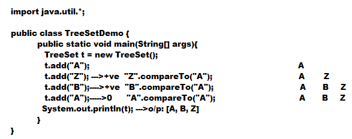

Comparable interface :
- Comparable interface present in java.lang package and it contains only one method i.e ,
public int compareTo(Object obj);
- obj1.compareTo(obj2)
- returns -ve, if obj1 has to come before obj2
- returns +ve, if obj1 has to come after obj2
- returns 0, if obj1 and obj2 are equal
- If we are depending on default natural sorting order internally JVM will call compareTo() method to place objects in proper sorting order .

- Note: If we are not satisfied with default natural sorting order or if default natural sorting order is not already available then we can define our sorting order using Comparator .
- Comparable meant for default Natural sorting order where as Comparator meant for customized sorting order .